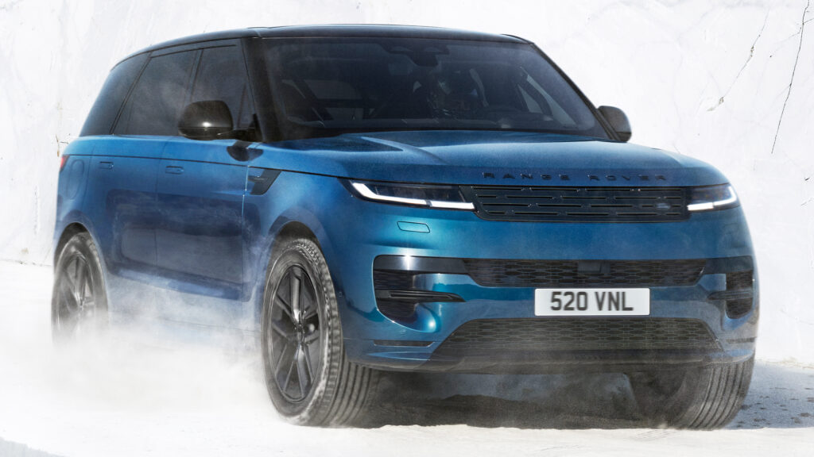

for DC Advanced UX Team.Vivi · Yohan · Libby · Lim Jisu · Katey · Anna
Back Issue

Cockpit
Range Rover Sport Electric: same cabin, 13.1-inch Pivi Pro
JLR opened orders for the Range Rover Sport Electric on 30 September, from £110,000 in the UK with deliveries in Q1 2027. The cabin is deliberately the combustion car's: a 13.1-inch curved-glass Pivi Pro touchscreen and a 13.7-inch cluster, no new screen real estate. What is new is sound: JLR says the drive-mode signature 'layers simple tones that blur the lines between music and engineering'. 550 PS, 850 Nm, 118.5 kWh and 378 miles WLTP; outside, only the grille, wheels and missing tailpipes give it away.
JLR가 9월 30일 레인지로버 스포츠 일렉트릭 주문을 시작했다. 영국 가격은 11만 파운드부터, 인도는 2027년 1분기다. 실내는 내연기관 모델 그대로다. 13.1인치 곡면 유리 Pivi Pro 터치스크린과 13.7인치 계기판이며 새 화면은 없다. 새로운 것은 소리다. JLR은 주행 모드별 사운드가 '단순한 음을 겹쳐 음악과 공학의 경계를 흐린다'고 했다. 550PS, 850Nm, 118.5kWh, WLTP 378마일이고 외관은 그릴과 휠, 사라진 배기구만 다르다.
BYD Seagull II: one screen split 3/7, cluster on the left
BYD has detailed the second-generation Seagull ahead of a sub-100,000-yuan launch. There is no separate cluster: one floating display is split 3/7, the left 30 per cent carrying speed, gear, range and drive mode, the right 70 per cent navigation and media. A row of physical buttons sits under the screen, with BYD's magnetic 'magic' buttons and a two-spoke wheel. The driver's seat gains massage, the frunk holds 94 L, a 95 kW motor now drives the rear wheels and the body grows to 4,205 mm. Follow-up to the 28 September cabin reveal.
BYD가 10만 위안 미만 출시를 앞두고 2세대 시걸의 사양을 공개했다. 별도 계기판은 없다. 하나의 플로팅 화면을 3대7로 나눠 왼쪽 30%에 속도, 기어, 주행거리, 주행 모드를, 오른쪽 70%에 내비게이션과 미디어를 띄운다. 화면 아래에는 물리 버튼 열이 남고, 자석식 '매직 버튼'과 2스포크 휠이 들어간다. 운전석에 마사지가 추가됐고 프렁크는 94L, 95kW 모터는 뒷바퀴를 굴리며 길이는 4,205mm로 커졌다. 9월 28일 실내 공개의 후속이다.
Riff by Center: three faces, eleven named colours, a pan
Center has built the identity for Riff, Daniel Humm's chef-led meal kits, as a system that teaches while it sells. Three typefaces: Prisma Text Low as the workhorse, Society, a high-contrast serif with quirky ligatures, and ABC Stefan Simple for the handwritten notes of the mascot, Dan the Pan. The palette names eleven colours, from Tablecloth White and Riff Blue to Radicchio Pink and Noodle Yellow, and each box is fronted by a flavour-coded bowl. The wordmark sits on a curved baseline with a colour-changing dot over the i; the back carries recipe steps, the top a QR to Humm's videos.
Center为Daniel Humm的主厨餐包品牌Riff打造了一套边卖边教的识别系统。三款字体：主力的Prisma Text Low，带怪趣连字的高对比衬线Society，以及用于吉祥物“Dan the Pan”手写批注的ABC Stefan Simple。色板给11种颜色命名，从Tablecloth White、Riff Blue到Radicchio Pink、Noodle Yellow，每个盒面以一只按风味配色的碗为主视觉。字标落在弧形基线上，i上的圆点会变色；盒背印步骤，盒顶放Humm烹饪视频的二维码。
센터가 다니엘 훔의 셰프 밀키트 브랜드 리프의 아이덴티티를 팔면서 가르치는 시스템으로 만들었다. 서체는 세 가지다. 주력인 Prisma Text Low, 독특한 합자가 있는 고대비 세리프 Society, 마스코트 '댄 더 팬'의 손글씨 메모용 ABC Stefan Simple이다. 팔레트는 Tablecloth White와 Riff Blue부터 Radicchio Pink, Noodle Yellow까지 열한 가지 색에 이름을 붙였고, 상자 앞면은 맛별 색의 그릇이 차지한다. 워드마크는 곡선 기준선 위에 놓이고 i의 점은 색이 바뀐다. 윗면에는 훔의 영상으로 가는 QR이 있다.
007 First Light art blast: IOI's faces, cloth and lighting
IO Interactive has published an ArtStation Art Blast for 007 First Light, and 80 Level has pulled the highlights. Franchise art director Rasmus Poulsen and production art director Claudio Della Neve credit a character team that rebuilt facial rigs from scratch, found new ways to render stitching and fine cloth detail, and built dedicated skin, hair and eye solutions. Environments had to carry everything from street driving to falling out of a plane. Ten artists are named, from Ward Lindhout's concepts to Irene Andersen's lighting. The game shipped in May and sold 3 million in two weeks.
IO Interactive为《007 First Light》发布了ArtStation Art Blast，80 Level整理出精华。系列艺术总监Rasmus Poulsen与制作艺术总监Claudio Della Neve介绍，角色团队从零重建面部绑定，开发了渲染缝线与布料细节的新方法，并为皮肤、头发和眼睛做了专门方案；场景要同时承载街头驾驶到跳出飞机。文章点名了从Ward Lindhout的概念到Irene Andersen灯光的十位艺术家。游戏5月发售，两周卖出300万份。
IO 인터랙티브가 '007 퍼스트 라이트'의 아트스테이션 아트 블라스트를 공개했고 80 Level이 핵심을 추렸다. 프랜차이즈 아트 디렉터 라스무스 폴센과 프로덕션 아트 디렉터 클라우디오 델라 네베에 따르면 캐릭터 팀은 얼굴 리그를 처음부터 다시 만들고, 바느질 땀과 옷감 디테일을 그리는 새 렌더링 방법을 개발했으며, 피부·머리카락·눈에 전용 솔루션을 썼다. 환경은 시내 주행부터 비행기 추락까지 받쳐야 했다. 워드 린드하우트의 콘셉트부터 아이린 안데르센의 라이팅까지 열 명이 거명됐다. 게임은 5월 출시 후 2주 만에 300만 장이 팔렸다.
Figma Motion: animation styles, audio and Lottie export
Figma's 30 September release notes give Motion, the keyframe tool launched at Config in June, its largest update yet. Easing, duration and other variable-backed properties can be saved as a named animation style, combined into patterns and published to team libraries, so motion becomes a token rather than a per-file setting; Figma says agents can apply the styles via MCP or Skills. Audio drops onto a clip or timeline, trims against keyframes and exports in MP4 or WebM. Text animates per character, word or line and stays editable. Export adds Lottie and dotLottie.
피그마가 9월 30일 릴리스 노트에서 6월 컨피그에서 공개한 키프레임 도구 모션의 가장 큰 업데이트를 내놓았다. 이징, 길이 등 변수 기반 속성을 이름 있는 애니메이션 스타일로 저장하고 패턴으로 조합해 팀 라이브러리에 게시할 수 있어 모션이 파일별 설정이 아닌 토큰이 된다. 에이전트는 MCP나 스킬로 이 스타일을 적용할 수 있다. 오디오를 클립이나 타임라인에 올려 키프레임에 맞춰 자르고 MP4나 WebM으로 내보낸다. 텍스트는 글자·단어·줄 단위로 움직이며 편집 가능하다. 내보내기에 Lottie와 dotLottie가 추가됐다.
Anrealage: 2,000 e-ink scales turn a dress into a display
Kunihiko Morinaga's Anrealage SS27 show in Paris, 'Skin', sent out six evening dresses each carrying 1,000 to 2,000 individually controlled electronic-paper scales. The scales are reflective, so colour and pattern travel across the body, drain back to grey and re-form without emitting light; the 3D-printed shells, made with SEKISAI's Effective Skin process, shift with viewing angle, and AI-assisted mapping laid out the wiring beneath. Toray Ultrasuede, washi and Kyocera's FOREARTH printing finish the list, and the finale replayed last season's LED camouflage beside the e-ink looks, emissive against reflective.
모리나가 구니히코의 안리얼에이지 2027 봄여름 파리 쇼 'Skin'은 이브닝드레스 여섯 벌에 각각 1,000~2,000개의 개별 제어 전자종이 비늘을 입혔다. 비늘은 반사형이라 색과 패턴이 몸 위를 이동하고 회색으로 빠졌다가 다시 모이지만 빛은 내지 않는다. SEKISAI의 Effective Skin 공정으로 3D 프린팅한 외피는 보는 각도에 따라 달라지고, 아래 배선은 AI 보조 매핑으로 짰다. 도레이 울트라스웨이드, 와시, 교세라 FOREARTH 프린팅이 소재 목록을 채우며, 피날레는 지난 시즌의 LED 카무플라주를 전자종이 룩 옆에 세워 발광과 반사를 대비시켰다.
DBX GT: 3,200 perforations and 10 mm more foam per seat
Aston Martin's DBX GT, revealed 1 October with first deliveries in Q4, is a comfort-first trim on the 717 hp V8 SUV. Each front seat is cut with 2,267 feet of thread and more than 3,200 perforations in semi-aniline leather, over an extra 10 mm layer of memory foam front and rear; monotone, duotone and tritone schemes and bespoke stitching are offered. The drive-mode controller is anodised metal, floor mats are deep pile, sound deadening is added and the glass roof is standard. Outside: a double-vaned grille, two-piece metal side strakes and 22-inch forged wheels in Satin Titanium.
애스턴마틴이 10월 1일 DBX GT를 공개했다. 4분기 인도되며 717마력 V8 SUV에 편안함을 앞세운 트림이다. 앞좌석마다 세미 아닐린 가죽에 2,267피트의 실과 3,200개 넘는 펀칭 구멍이 들어가고, 앞뒤 시트 모두 메모리폼이 10mm 더 깔린다. 단색·투톤·스리톤 배색과 맞춤 스티치를 고를 수 있다. 주행 모드 컨트롤러는 아노다이징 금속이고 두꺼운 매트, 추가 흡음재, 글라스 루프가 기본이다. 외관은 더블 베인 그릴, 2피스 금속 스트레이크, 새틴 티타늄 22인치 단조 휠이다.
TRASH: Lucas Durkheim's 2D animation over 16 mm film
Motionographer's quickie this week is TRASH, an animated short by Lucas Durkheim and Paris studio Eddy for rapper Saïf (84 City / Warner Music France), released with his second EP. Hand-drawn 2D characters are composited over 16 mm live-action plates, so grain, flare and camera movement belong to the film and the figures sit inside it. The story follows 24 hours of Adel, a lookout on a housing estate in the south of France, pitched as 'a feverish, incandescent contemporary western'. Head animator Raphaël Chiapparin, character design Jules Rigolle, DOP Hugo Ghnassia, grade by NOD.
모셔노그래퍼가 이번 주 소개한 TRASH는 뤼카 뒤르켐과 파리 스튜디오 에디가 래퍼 사이프(84 City/워너 뮤직 프랑스)를 위해 만든 애니메이션 단편으로, 그의 두 번째 EP와 함께 공개됐다. 손으로 그린 2D 캐릭터를 16mm 실사 플레이트 위에 합성해 입자, 플레어, 카메라 움직임은 필름의 것이고 인물은 그 안에 들어가 산다. 이야기는 프랑스 남부 주거 단지에서 망을 보는 아델의 24시간을 따라가며 '열에 들뜬, 백열하는 동시대 서부극'으로 소개됐다. 수석 애니메이터 라파엘 키아파랭, 캐릭터 디자인 쥘 리골, 촬영 위고 가나시아, 색보정 NOD.
Control Resonant: rain and wind replace the yellow paint
Remedy director Mikael Kasurinen tells Game Developer why Control Resonant's gravity-warped Manhattan has no painted ledges. With up and down unreliable, the team kept 'a consistent point of gravity that guides the effects of rain and wind', so weather and architecture tell players which way is down and where to go. 'If it feels like it's like go here, it's not anymore a decision for the player. Somebody already decided for you.' He admits the traversal can alienate people early and wants them to doubt themselves and check again. A brief for wayfinding by environmental cue rather than marker.
레메디의 디렉터 미카엘 카수리넨이 '컨트롤 레조넌트'의 중력이 뒤틀린 맨해튼에 왜 노란 페인트 난간이 없는지 게임 디벨로퍼에 설명했다. 위아래가 불확실한 공간에서 팀은 '비와 바람의 효과를 이끄는 일관된 중력 기준점'을 유지해 날씨와 건축이 어느 쪽이 아래이고 어디로 가야 하는지 알려주게 했다. '여기로 가라는 느낌이 들면 더 이상 플레이어의 결정이 아니다. 누군가 이미 대신 결정한 것이다.' 그는 초반 이동이 사람들을 밀어낼 수 있음을 인정하면서도 스스로 의심하고 다시 확인하길 바란다고 했다. 표지 대신 환경 단서로 길을 찾게 하는 사례다.
Rivian pixel headlights: a light bar that shows the charge
Rivian has written up Dynamic Adventure Lighting, the in-house matrix headlight system on Gen 2 R1 and R2 and the first adaptive matrix beam switched on in the US after the 2022 rule change. Individually controlled LED pixels carve oncoming traffic out of the high beam, level the low beam over bumps and under acceleration, and bend light into corners. The segmented RGB light bar front and rear on the Gen 2 R1 doubles as an interface, showing charging progress and roadside lighting alerts, and the exterior lights linger as you walk away. Nothing for Gen 1 trucks.
리비안이 다이내믹 어드벤처 라이팅을 설명하는 글을 올렸다. 2세대 R1과 R2에 들어간 자체 개발 매트릭스 헤드라이트로, 2022년 규정 변경 뒤 미국에서 처음 켜진 적응형 매트릭스 빔이다. 개별 제어 LED 픽셀이 상향등에서 마주 오는 차만 도려내고, 요철과 가속 시 하향등 높이를 맞추며, 코너 안쪽으로 빛을 꺾는다. 2세대 R1 앞뒤의 분할 RGB 라이트 바는 충전 진행률과 노변 조명 경고를 표시하는 인터페이스 역할도 하고, 내린 뒤에도 외부 조명이 잠시 유지된다. 1세대에는 제공되지 않는다.
Zero's 20th Anniversary SR/F: 40 bikes in black and gold
Zero Motorcycles marks twenty years since its 2006 founding in Santa Cruz with a 20th Anniversary Limited Edition SR/F: 40 units, 20 for North America and 20 for Europe, through participating dealers only. The scheme is jet black with gold anniversary graphics, and the parts list is a study in blacking out: carbon front and rear fenders, smoked indicators, black headlight wings and aluminium flyscreen, black billet mirrors, bar ends and brake lever, billet lever guard and reservoir caps, black grab rails and brake pedal. Underneath it is the standard SR/F: 83 kW, 190 Nm and Cypher III.
Zero Motorcycles以20周年限量版SR/F纪念2006年在圣克鲁斯创立二十周年：全球40台，北美与欧洲各20台，仅经指定经销商销售。配色为乌黑配金色纪念图案，零件清单是一堂“全黑化”课：碳纤维前后挡泥板、熏黑转向灯、黑色大灯翼片与铝制风镜、黑色CNC后视镜、把手堵头和刹车拉杆，CNC拉杆护罩与油杯盖，黑色扶手与刹车踏板。底子仍是标准SR/F：83千瓦、190牛·米、Cypher III系统。
제로 모터사이클이 2006년 샌타크루즈 창립 20주년을 기념해 20주년 한정판 SR/F를 내놓았다. 전 세계 40대로 북미 20대, 유럽 20대이며 지정 딜러에서만 판다. 제트 블랙에 금색 기념 그래픽을 올렸고, 부품 목록은 블랙아웃 교본에 가깝다. 카본 앞뒤 펜더, 스모크 방향지시등, 검은 헤드라이트 윙과 알루미늄 플라이스크린, 검은 빌릿 미러·바엔드·브레이크 레버, 빌릿 레버 가드와 리저버 캡, 검은 그랩 레일과 브레이크 페달까지다. 바탕은 표준 SR/F로 83kW, 190Nm, 사이퍼 III OS다.
2027 Ninja 650: a redrawn 4.3-inch TFT with nav and voice
Kawasaki has announced the 2027 Ninja 650 for Europe, on sale from December with the UK price held at £7,499. The 4.3-inch colour TFT gets a new layout, and the smartphone link now adds turn-by-turn navigation and voice commands through the Rideology app. The chassis changes more: a 37 mm Showa SFF-BP inverted fork replaces the 41 mm conventional unit, radial four-piston calipers and round discs replace axial two-piston calipers and petal discs, and seat height drops to 30.9 in. The 649 cc twin stays at 67.3 hp; kerb weight is 428 lb. Three colours, led by Lime Green.
가와사키가 2027년형 유럽 사양 닌자 650을 발표했다. 12월 출시이며 영국 가격은 7,499파운드로 동결됐다. 4.3인치 컬러 TFT는 새 레이아웃을 얻었고, 스마트폰 연결은 라이돌로지 앱으로 턴바이턴 내비게이션과 음성 명령을 추가했다. 섀시 변화가 더 크다. 37mm 쇼와 SFF-BP 도립 포크가 41mm 정립 포크를 대체하고, 래디얼 4피스톤 캘리퍼와 원형 디스크가 액시얼 2피스톤과 페탈 디스크를 대신하며, 시트 높이는 30.9인치로 낮아졌다. 649cc 트윈은 67.3마력 그대로, 공차 중량은 428파운드다. 색상은 라임 그린 등 세 가지다.
MoMA's first information-design show: 30 works, 200 years
Dezeen reports on Full Disclosure: The Edge of Information Design, MoMA's first exhibition devoted entirely to the discipline, open in the free street-level gallery on West 53rd Street from 27 September 2026 to 13 June 2027. Paola Antonelli, with Jules Bernstein and Forrest Pelsue, has assembled 30 digital and analogue works, six newly acquired, from Du Bois's data portraits to Ed Hawkins's Warming Stripes and Lupi and Posavec's Dear Data. The headline piece is Domestic Data Streamers' Synthetic Memories, which reconstructs remembered scenes that were never photographed with generative image models.
Dezeen报道MoMA首个完全聚焦信息设计的展览“Full Disclosure”，9月27日至2027年6月13日在西53街临街免费展厅展出。Paola Antonelli与Jules Bernstein、Forrest Pelsue选出30件数字与实体作品，其中6件为新收藏，从杜波依斯的数据肖像到Ed Hawkins的“暖化条纹”。主打作品是Domestic Data Streamers的《Synthetic Memories》，用生成式图像模型重建从未被拍下的记忆场景。
디진이 MoMA 최초로 정보 디자인만 다루는 전시 'Full Disclosure: The Edge of Information Design'을 보도했다. 9월 27일부터 2027년 6월 13일까지 웨스트 53번가의 무료 가로변 갤러리에서 열린다. 파올라 안토넬리가 줄스 번스타인, 포레스트 펠수와 함께 디지털·아날로그 작품 30점을 골랐고 그중 6점은 신규 소장품이다. 듀보이스의 데이터 초상부터 에드 호킨스의 '워밍 스트라이프', 루피와 포사벡의 '디어 데이터'까지 아우른다. 대표작은 도메스틱 데이터 스트리머스의 '신세틱 메모리즈'로, 사진으로 남지 않은 기억 속 장면을 생성형 이미지 모델로 재구성한다.
Flying Flea C6: round touchscreen, joystick, a feel dial
designboom reads Royal Enfield's €5,990 Flying Flea C6, shown at Paris Design Week, as an object. The cockpit is a classic round touchscreen worked by physical joystick controls, plus a dedicated dial for ride feel; the connected stack brings an app, over-the-air updates and app-managed charging. The forged-aluminium girder fork quotes the 1940s wartime Flying Flea, the battery casing is sculpted with wing-like cooling fins as a visual motif, and the frame is an aluminium exoskeleton. Three finishes: Flea Green, Storm Black and Parachute White. Follow-up to the September launch.
디자인붐이 파리 디자인 위크에서 로열 엔필드의 5,990유로 플라잉 플리 C6를 하나의 오브제로 읽었다. 조종석은 고전적인 원형 터치스크린을 물리 조이스틱으로 다루는 구성이고 '주행 감각' 전용 다이얼이 따로 있다. 연결 기능은 앱, 무선 업데이트, 앱 기반 충전 관리다. 단조 알루미늄 거더 포크는 1940년대 전시 플라잉 플리를 인용하고, 배터리 케이스는 날개 같은 냉각 핀을 시각 모티프로 삼았으며, 프레임은 알루미늄 외골격이다. 색상은 플리 그린, 스톰 블랙, 패러슈트 화이트이며 인도와 영국의 200명 팀이 만들었다. 9월 출시의 후속이다.
Emily Klaebe: a serif that becomes a grid of bugle beads
It's Nice That profiles Emily Klaebe, the Portland type designer who was design lead at Order Type Foundry and now teaches type at Portland State. Kickdrum fuses geometric 1970s letter systems with organic swirls she likens to lollipops, snail shells and the cochlea. Missive Serif is an ornate display family with dramatic flares, gooey ball terminals and Art Nouveau roots; Missive Bead translates the same forms into a grid built on the elongated proportions of bugle beads, for embroidery. The faces ship through Kind Type, each presented inside a 'microcosm' of colour, material and setting.
It's Nice That专访波特兰字体设计师Emily Klaebe，她曾任Order高级设计师与Order Type Foundry设计主管，现在波特兰州立大学教字体设计。Kickdrum把1970年代的几何字母系统与有机漩涡相融，她形容像棒棒糖、蜗牛壳和耳蜗。Missive Serif是带夸张喇叭口、黏稠球形末端和新艺术血统的华丽展示字体；Missive Bead则把同样的字形转译为按长管珠比例搭建的网格，用于刺绣。字体经Kind Type发行，每款都放进色彩、材质与排版组成的“微观世界”里展示。
잇츠 나이스 댓이 포틀랜드의 서체 디자이너 에밀리 클레이비를 소개했다. 오더의 시니어 디자이너와 오더 타입 파운드리의 디자인 리드를 지냈고 지금은 포틀랜드 주립대에서 서체 디자인을 가르친다. 킥드럼은 1970년대 기하학적 글자 체계에 막대사탕, 달팽이 껍질, 달팽이관 같은 유기적 소용돌이를 섞었다. 미시브 세리프는 과장된 플레어와 끈적한 볼 터미널, 아르누보 뿌리를 가진 디스플레이 서체이고, 미시브 비드는 같은 형태를 긴 대롱 구슬 비율의 격자로 옮겨 자수용으로 만들었다. 서체는 카인드 타입으로 유통되며 각각 색, 재료, 조판으로 이룬 '소우주' 안에서 보여준다.
Lynk & Co 02 refresh: 15.4-inch screen, a 6.8 L fridge
Lynk & Co's refreshed 02 hatch went on sale in China on 28 September and took 14,663 orders in its first hour. The cabin keeps a two-screen layout: a 15.4-inch centre display and a 10.2-inch LCD cluster with dynamic ambient lighting, and the top trim adds a 50 W wireless charger, 23 speakers, suede seats and a 6.8-litre fridge. Outside are new bumpers, semi-hidden door handles, a 192-line LiDAR and a 125-litre frunk on a 4,495 mm body. A 245 kW rear motor with 61.52 or 70 kWh LFP packs gives 545 to 630 km CLTC, from 123,800 yuan.
링크앤코의 부분변경 02 해치백이 9월 28일 중국에서 출시돼 첫 한 시간에 14,663대의 주문을 받았다. 실내는 15.4인치 중앙 화면과 10.2인치 LCD 계기판의 2화면 구성을 유지하고 동적 앰비언트 조명을 넣었다. 최상위 트림에는 50W 무선 충전, 스피커 23개, 스웨이드 시트, 6.8리터 냉장고가 더해진다. 외관은 새 범퍼와 반매립 도어 핸들, 192라인 라이다를 갖추고 4,495mm 차체에 125리터 프렁크를 뒀다. 245kW 후륜 모터와 61.52 또는 70kWh LFP 배터리로 CLTC 545~630km를 달리며 가격은 12만 3,800위안부터다.